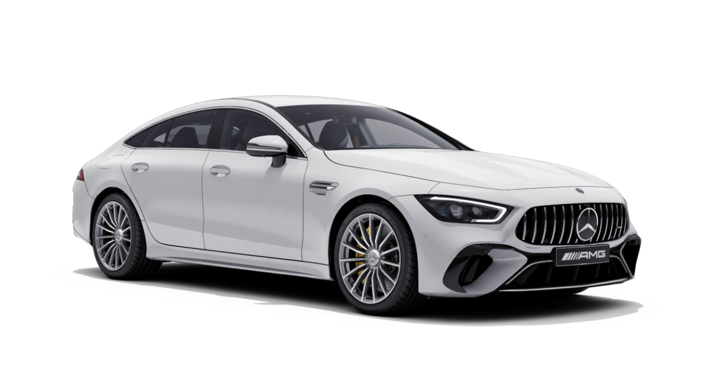

Mercedes-AMG GmbH, commonly known as AMG (Aufrecht, Melcher, Großaspach), is the high-performance subsidiary of Mercedes-Benz AG.[1] AMG independently hires engineers and contracts with manufacturers to customize Mercedes-Benz AMG vehicles. The company has its headquarters in Affalterbach, Baden-Württemberg, Germany. AMG was originally an independent engineering firm specializing in performance improvements for Mercedes-Benz vehicles. DaimlerChrysler AG took a controlling interest in 1999, then became the sole owner of AMG in 2005. Mercedes-AMG GmbH is now a wholly owned subsidiary of Mercedes-Benz AG,[1] which is in turn owned by the Mercedes-Benz Group.[2]!
AMG was founded as a racing engine forge in 1967 under the name AMG Motorenbau- und Entwicklungsgesellschaft mbH (German for 'AMG Engine Production and Development Limited') by former Mercedes-Benz engineers Hans Werner Aufrecht and Erhard Melcher in Burgstall an der Murr, near Stuttgart. The initialism 'AMG' stands for Aufrecht, Melcher and Großaspach (Aufrecht's birth town).[citation needed] In 1976, most of AMG moved to Affalterbach, with the racing-engine development remaining at the old location in Burgstall. At this time, Erhard Melcher ceased to be a partner, but he continued to be an employee at the Burgstall location.[6]